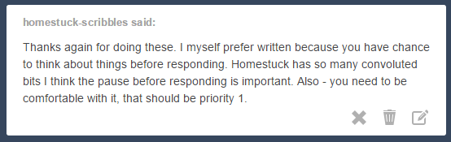
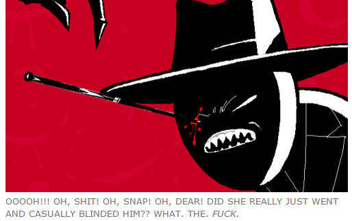
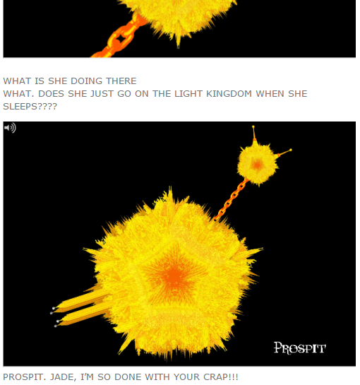

Okay, so some people requested an audio react for Dave: Accelerate, and a couple of you even asked for a few pages after it! I wanted to know what you guys think I should do. I’ll admit that the whole audio reacting thing makes me kinda uncomfortable but I do want to try to see how it goes! Before telling me if you would rather have a written reaction or an audio one, consider this: it would be only audio (video size limitation on tumblr is 100 mb and I’m not creating a YouTube channel when I don’t even know if I will do it again!), there will be a transcript together with screenshots, and also as I have already said english is not my first language and so my pronunciation skills are… kinda shitty?? you would still have the transcript to read as I ramble off though. So yeah, let me know what you think about this! :)
LIVEBLOGGING STATUS UPDATE!!
HERE I AM! I am looking at the fourth wall!! Like how much more meta can we even get?! :D Anyway, what I meant to do was informing you about my audio-react shenanigans. I opted for an audio react for Jack: Ascend instead of one for Dave: Accelerate. Well, I didn’t exactly “opt” for it. It was kind of forced because I must have messed up with some settings and basically during the latter the music is really loud even though I set the volume very low and you can’t hear what I’m saying. Not that you would have lost much. It was just me laughing at Calsprite. …For about three minutes. Non-stop.
ANYWAY. I want to know if you want the audio reaction for Jack: Ascend or just a transcript. Because it’s just me screaming HOLY SHIT HOLY SHIT HOLY SHIT over and over and progressively louder. I’m not kidding. That’s all I say. I meant scream. That’s all I scream. During the flash. (I reached octaves I did not know I could reach. I’m not even sure the human ear can listen to it. Maybe dolphins can. I doubt there are dolphins reading my liveblog.) Then I make some considerations before and after. But during the thing… That’s all I do. If you want me to upload it anyway I take no responsibilities for your poor poor ears. I just freaked out a tiny little bit.
I don’t want to stop at Jack: Ascend for the next update though. Wanna liveblog at least another… 20-30 pages?? I’ve been kind of really busy this weekend. Between studying for tests and crying about John and Jade’s death. You know, things like that. And probably too much time spent watching anime. (GIVE PSYCHO-PASS A TRY, IT’S SO GOOD.) …Putting things in parenthesis doesn’t really make sense if you write in all caps into them, does it now? Okay, that’s all I wanted to say, have a nice day y’all!
Okay, now I know this is getting a little petulant but I have to talk about this again. And clarify what I mean when I say I’m doing an audio reaction for a certain flash. Because honestly I am in a position in which I don’t know what to do. Some people have been asking for audio reactions for about two months. But it has come up that some people don’t want audio-reactions at all. And obviously people have different opinions about the matter but I want to say some things about the reasons they don’t want an audio react.

Basically everyone who would rather have a written reaction have given this as their motivation. Not that you actually had to give any motivation for preferring one or the other. Now what is an audio react? It is a real time reaction to the events occurring on the screen. You say I can speak intelligently, and I thank you, but I’ve never put thoughts first into what I write when reacting to flashes. Because I was trying to give a feeling of what was going through my mind AS I WATCHED. Some exemples:

From the Intermission. This is not me reflecting on the events. This is me flipping my shit over something happening.

From the Jade on Prospit flash. This is not me thinking about what to say, not me thinking stuff through. I would have said more or less the same things if I had made an audio react! Heck, if I posted a written reaction for Jack: Ascend (a written reaction, not a transcript, written like I’ve always done) the “HOLY SHIT HOLY SHIT HOLY SHIT” would be what you are going to get! In big fat letters! Probably bold too! As always I rewatch the flash several times while I take screenshots and just to be sure that I got everything AFTER. And AFTER several screenshots and lots of OH MY GOD OH CRAP in all caps, I make my considerations. Seriously, that’s what I’ve always been doing. I reflect on everything that has happened in the flash AFTER.
Me making an audio react does not mean that I will scream as I watch the flash and never speak of it ever again. You’re not losing part of the experience. I just wanted to make this clear.